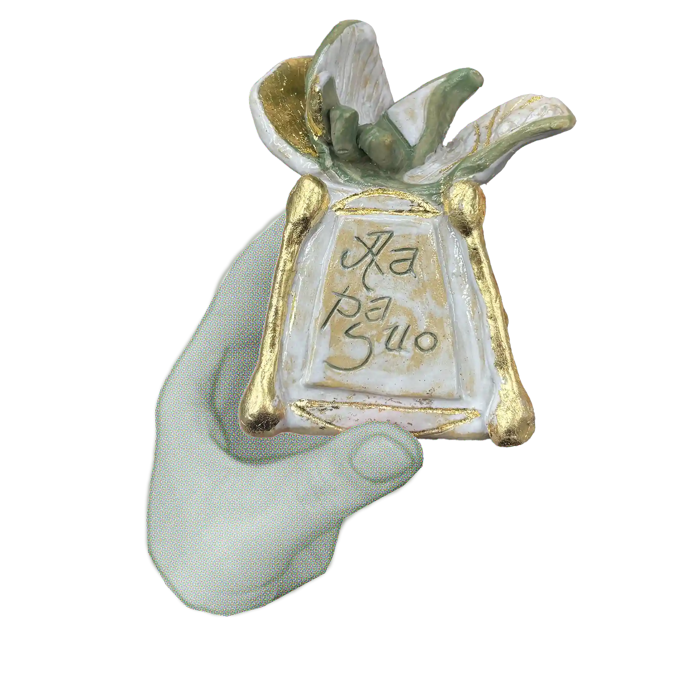
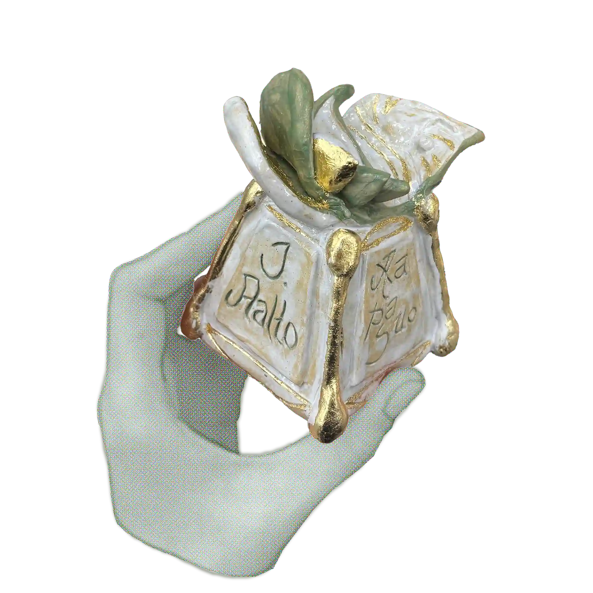
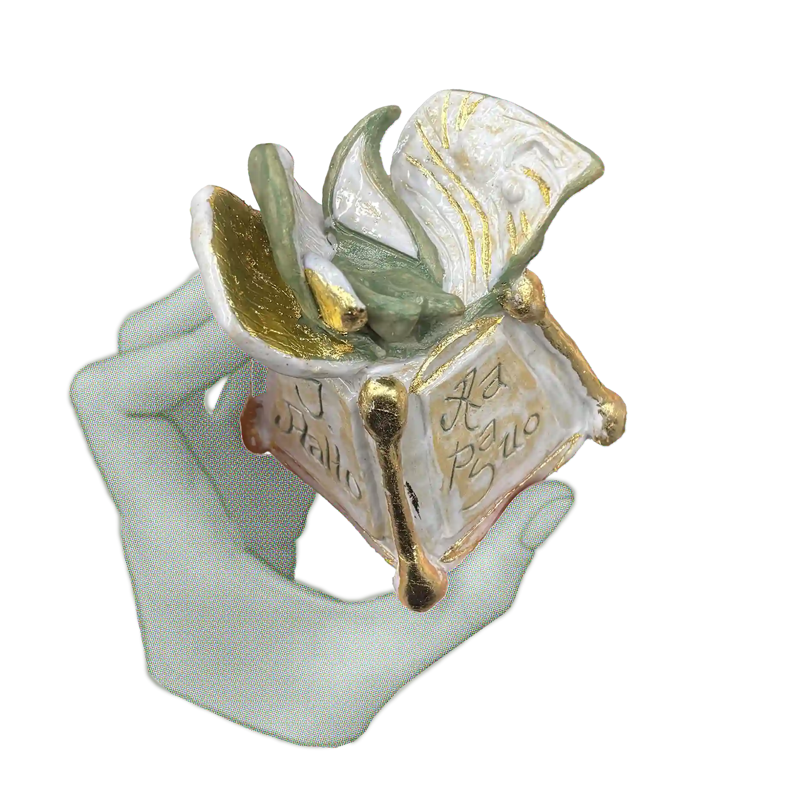
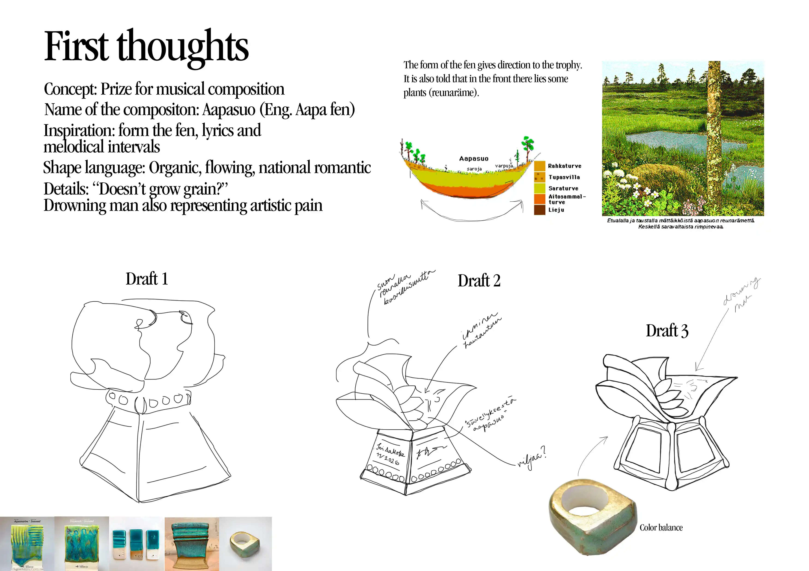
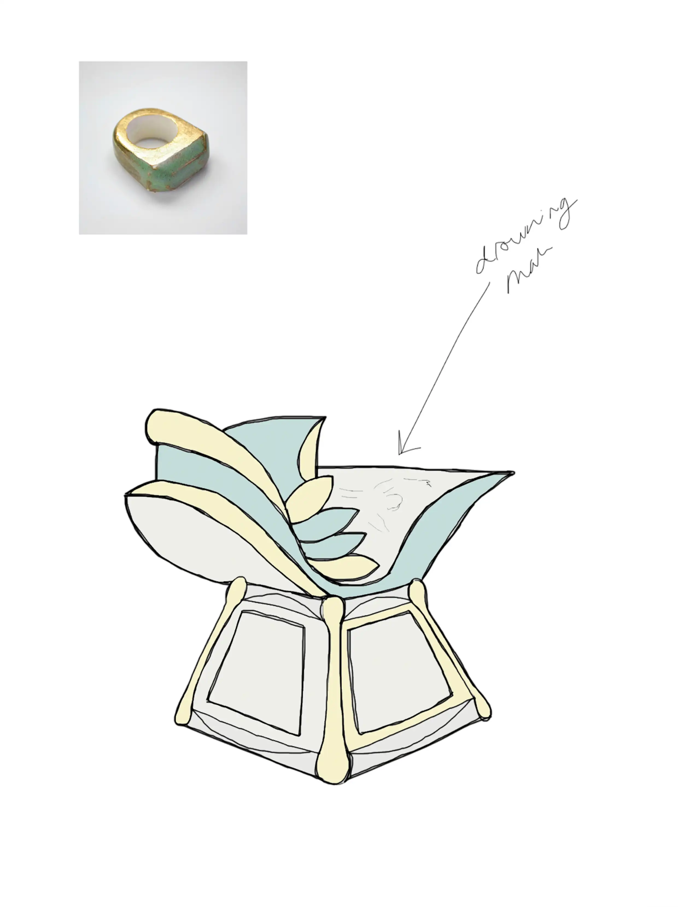
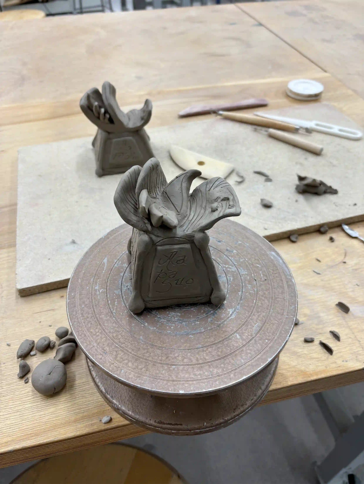
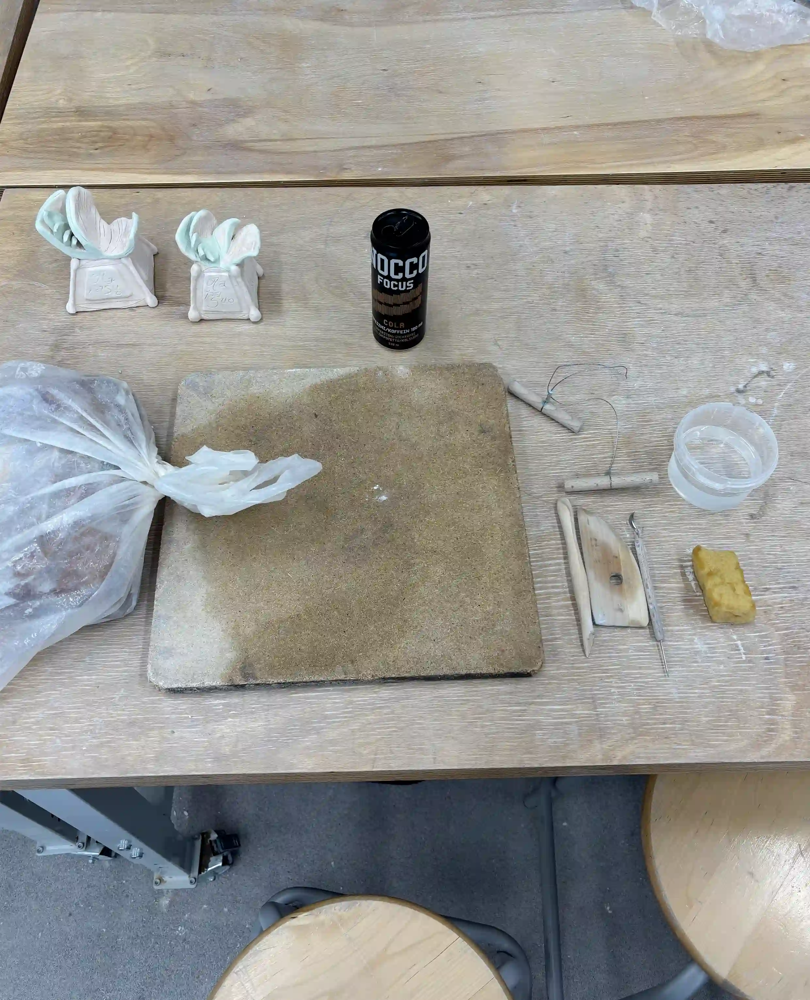
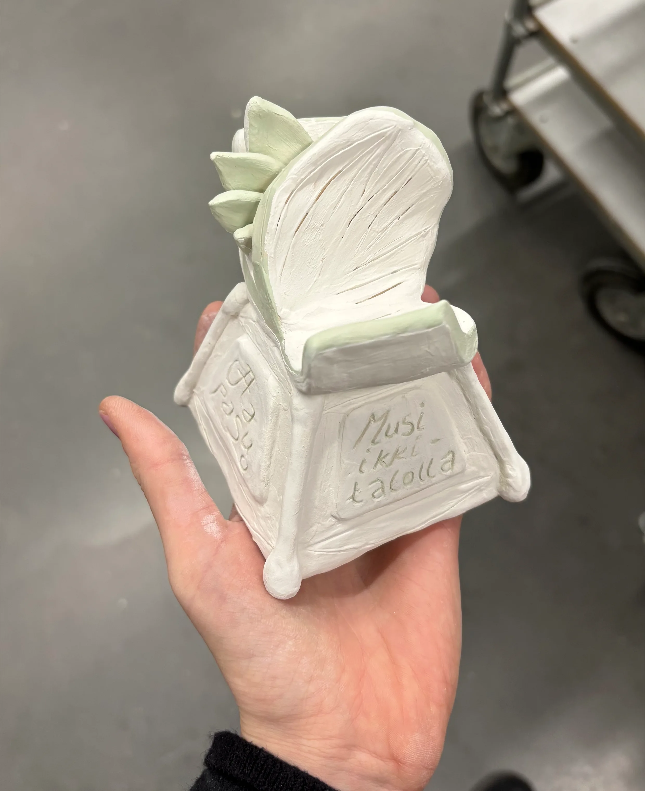
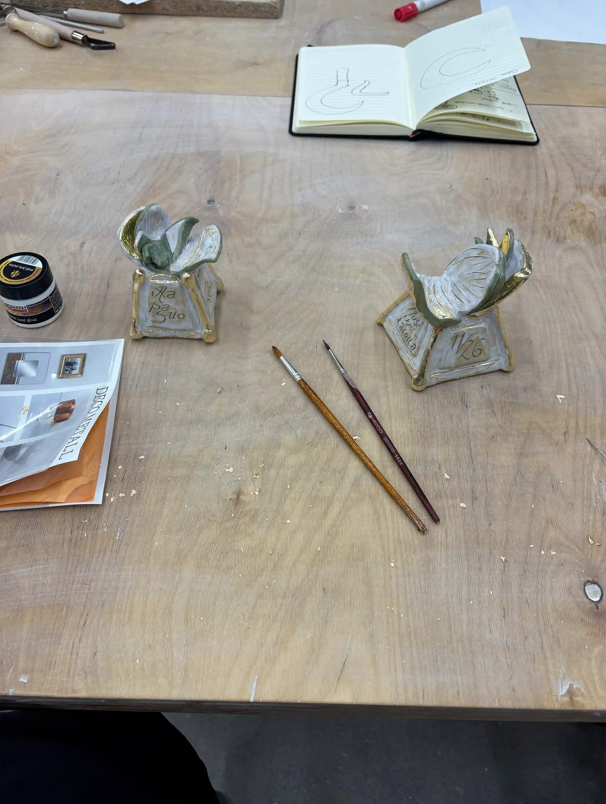
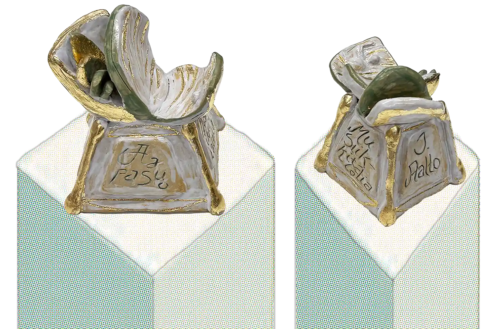

Aapasuo



Aapasuo is an award for a musical work of the same name. It was completed in autumn 2026 in the clay workshop at Aalto University's School of Arts, Design and Architecture (ARTS). One question in particular was where to draw the line between an award and a gesture of recognition—an act of remembrance. Since competition is not part of this work's context, I also reflected on the meaning of the word “award” during the design process.
The project explored the concept and aesthetics of awards, resulting in an award for musical achievement. In this work, the award acts more as a token commemorating an achievement that the person behind it should feel at least somewhat proud of. In that sense, the word “award” is somewhat misleading. A more fitting term might be “honorary object.”
Drafts


Process




In its form, the work drew inspiration from music awards and the visual language of awards more broadly. Often raised on a pedestal, awards seem to reach towards something higher and, in doing so, become the message themselves. Aapasuo was composed by Jeri Aalto for the Korkeakoulu concert at Musiikkitalo on 29 November 2026.
For my work, I wanted to place on the pedestal a form in which the physical shape of the bog meets the dramatic arc of the musical composition. The award is made in two pieces solely because of the risk of breakage during the making process. A key purpose of the sculpture was to give the composition a tangible, visually memorable form, allowing its composer to remember it even when not actively engaging with it through performance or listening.
